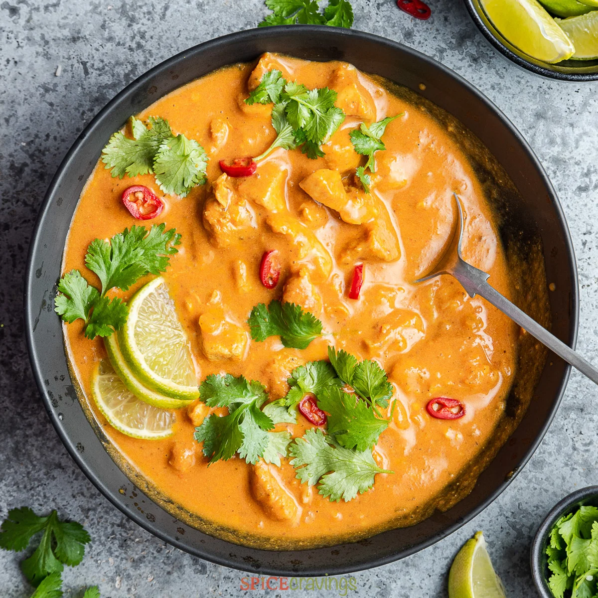

Coconut Curry

What Does Curry Taste Like? - Spice Cravings
Curry is often described as a dish that is earthy, spicy, warming, or even sometimes sweet. It is a well-balanced, richly spiced dish with notes of deep savory flavors from turmeric, coriander, cumin, bay leaf, cinnamon, and cloves, just to name a few. Black pepper and red chilies provide spiciness and a rich hue.
Ingredients
- 2 Onions
- 2 carrots
- 2 Red pepper
- 4 tomatoes
- 500 grs Chicken
- ginger
- spices
- Garlic
- Red Curry Paste
- Lemongrass
- Leftover Rice
Directions
- Saute aromatics: Heat a large saucepan on medium-high heat. Add oil, and onions, and cook for 3-4 minutes. Add ginger and garlic and cook for another minute.
- Saute Chicken: Add chicken pieces and saute the chicken for 2-3 minutes
- Add tomato and spices: Now add tomato puree, tomato paste, water, salt, and spices. Saute everything for another 2-3 minutes.
- Cook chicken: Reduce the heat to medium, add coconut milk, and give it a stir. Cover the pan with a lid and cook for 10-12 minutes, or until the chicken cooks through.
- Finish and thicken: Stir in sugar and lime juice. If you like a thicker curry, continue to simmer for 2-3 minutes. Turn off the heat when the sauce reduces to your liking.
- Garnish & Serve: Garnish with chopped cilantro or parsley and serve over rice.